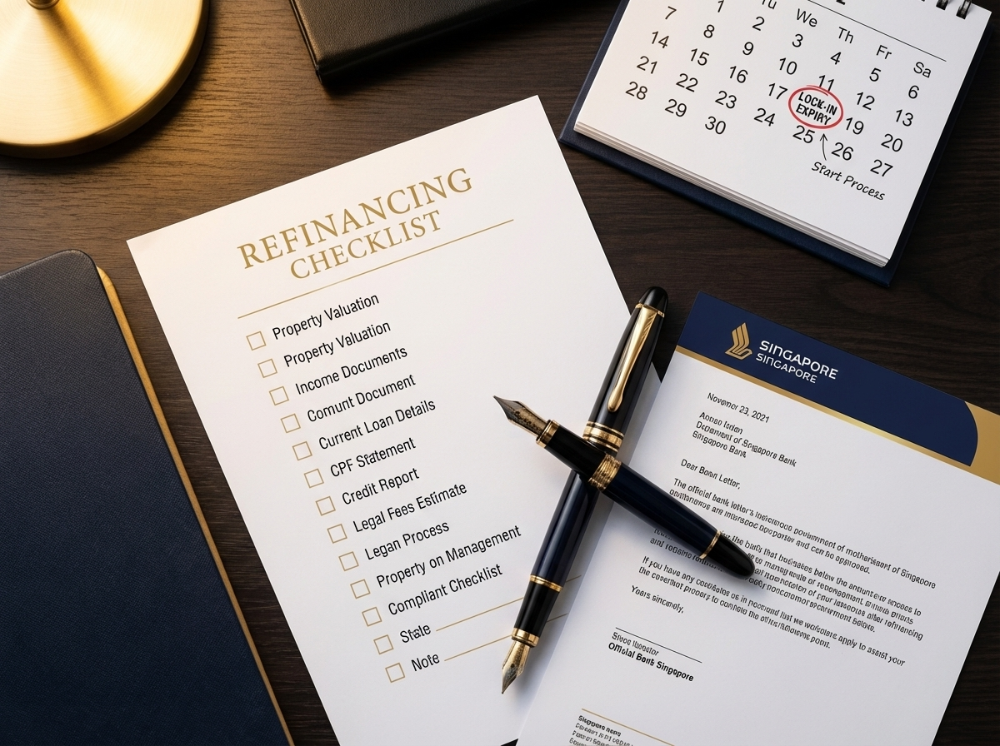

Refinance Home Loan in Singapore: When to Act and How to Save in 2026
If your lock-in has expired, your bank has already moved you to a board rate of 3.50%–4.50% p.a. or higher. On a S$700,000 balance, that costs roughly S$800–S$1,200 more every month than a current refinance package at 1.45% p.a. fixed. Refinancing closes the gap in about 8 weeks — and a bank subsidy usually covers the legal fees.
The Cost of Doing Nothing
Most Singapore mortgages have a 2- or 3-year lock-in. After that, the package quietly reverts to the bank's board rate, which sits between 3.50% and 4.50% p.a. in April 2026. The bank does not call you. They do not send a refinance offer. They simply collect the higher interest each month until you act.
On a S$700,000 outstanding loan with 25 years left, the monthly instalment difference between a 4.00% board rate and a 1.45% fixed refinance package is around S$950 per month. Over a 2-year lock-in window, that is roughly S$22,800 in interest you did not need to pay. Run your numbers in the refinance savings calculator before you read further — the gap is almost always larger than people expect.
The 3-Month Notice Rule
Almost every Singapore bank requires 3 months written notice before you redeem a loan at the end of its lock-in. Miss this window and the bank either delays your switch or charges a notice-period penalty equal to a full quarter of interest. Start the refinance conversation 4 months before lock-in expiry and you serve notice with room to spare.
If your lock-in has already expired, the rule does not apply — you can refinance immediately. The same is true if you are inside lock-in but selling the property; the redemption penalty (typically 1.5% of the outstanding balance) only applies to refinances, not to genuine sales.
When to Refinance: Two Triggers
You should refinance when either condition is true:
- Your lock-in has expired (or expires within 3–4 months) and you have not switched. Every month on a board rate is money lost.
- The rate spread is at least 0.30% p.a. between your current rate and the best available refinance package, and a bank subsidy will cover most of your legal fees.
Outside these triggers, repricing with your current bank is often the cleaner move. Inside lock-in with a small spread, the 1.5% redemption penalty wipes out the savings. Compare current refinance rates against your existing rate before you decide.
The Refinancing Timeline
A standard private property refinance runs about 8 weeks from first conversation to disbursement. The new bank coordinates with your existing bank, your conveyancing lawyer, and CPF if applicable. Your CPF OA deductions pause briefly during changeover and resume once the new mortgage charge is registered.
Week 1: Confirm lock-in date and gather rates
Pull your loan agreement and confirm the exact lock-in expiry. Submit income documents to a broker or a shortlist of banks. Ask for written indicative offers, not phone quotes.
Week 2: Compare and commit
Compare offers across all 16+ MAS-regulated lenders, not just the one or two you have heard of. Look at the headline rate, the bank subsidy (typically S$1,800–S$2,500), the cashback if any, and what the rate reverts to after the fixed window.
Week 3: Serve notice and instruct solicitors
Send the 3-month redemption notice to your existing bank. The new bank instructs a panel solicitor; legal fees run S$1,800–S$2,500 and are usually offset by the subsidy. Valuation costs S$300–S$500 and is often absorbed.
Weeks 4–6: TDSR re-assessment
The new bank reassesses TDSR/MSR affordability using current income against the MAS 4% stress test floor rate. For details on how TDSR is calculated for private property, see TDSR for private property.
Weeks 7–8: Completion
The new bank disburses on the day after lock-in expiry. The old loan is repaid. CPF records update automatically. Your new instalment starts the following month.
Repricing vs Refinancing

Repricing keeps you with the same bank, takes 2–3 weeks, and costs S$200–S$500. Refinancing moves you to a new bank, takes 6–8 weeks, and is usually cost-neutral after the bank subsidy. The right choice depends on what your current bank can offer versus the rest of the market.
| Feature | Repricing | Refinancing |
|---|---|---|
| What it is | New package with same bank | Switch to a new bank |
| Cost | S$200–S$500 admin fee | S$1,800–S$2,500 legal + S$300–S$500 valuation (subsidy usually covers it) |
| Rate access | Only your bank's current offers | All 16+ MAS-regulated lenders |
| Time | 2–3 weeks | 6–8 weeks |
| Best when | Your bank's reprice is within 0.10% of market | Market rate beats your bank by 0.30% or more |
Repricing is faster and lower friction. Refinancing usually wins on rate. Ask your bank for a reprice quote first; if it lands within 0.10% of the market's best, take it. If the gap is wider, refinance.
The 2026 Rate Picture
Monthly saving from refinancing a S$700,000 balance: a 0.30% reduction saves about S$100/month, 0.60% saves about S$200/month, and switching off a 4% board rate saves around S$950/month.
Refinance packages on offer in April 2026:
Fixed Rate
SORA-Linked
For most refinancers in 2026, fixed and SORA-linked packages land in a similar range. Fixed gives certainty for 2 years; SORA-linked is uncapped both ways. See the fixed vs SORA comparison for a full breakdown by tenor.
Worked Example: S$700K Refinance
A client has a S$700,000 outstanding loan, 25 years remaining, currently on a 2.05% p.a. expired-lock-in package that has just stepped up to a 3.85% board rate. We refinance to a 2-year fixed at 1.45% p.a.
- Old monthly instalment (3.85% board): approximately S$3,632
- New monthly instalment (1.45% fixed): approximately S$2,773
- Monthly saving: S$859
- Net switching cost after S$2,500 bank subsidy: close to zero
- Break-even: immediate — first month already net positive
Even comparing against the previous 2.05% rate (not the board rate), the saving is roughly S$200/month. With the bank subsidy covering legal fees, break-even on the valuation alone is about 2 months. Past that, every month is pure saving.
What Can Reduce Your Savings
- Legal fee clawback: Bank subsidies typically come with a 3-year clawback. Refinance again before that and you repay the subsidy.
- Cashback clawback: Some packages add S$2,000–S$5,000 cashback on disbursement, also clawed back if you exit early.
- Income change: TDSR is reassessed every refinance. A bonus cut or career change can limit the loan size the new bank will approve.
- Valuation gap: If your property has lost value, the new bank may require a cash or CPF top-up to keep the LTV within limits. Most private holdings of 3+ years are fine.
- Multiple property loans: If this is a second mortgage, every other loan counts against your TDSR. An equity / cash-out loan on top will tighten the calculation further.
HDB Owners: A Quick Note
If you are on a 2.60% HDB concessionary loan, refinancing to a 1.45% bank package looks attractive on paper. But you cannot switch back to HDB once you leave. Read the HDB loan vs bank loan trade-off before you commit — the lower rate is real, but so is the loss of optionality.
How a Broker Helps
Nexus Mortgage SG works with 16+ MAS-regulated lenders (see the Association of Banks in Singapore for the full list of member banks). We pull every available package side by side, handle the 3-month notice, instruct the panel solicitor, and time the disbursement to your lock-in expiry. Banks pay us on disbursement, so the service is free to you.
The two things we get asked most: "Has my lock-in expired?" and "What would I save?" The first is a 30-second check on your loan letter. The second is what the refinance savings calculator answers in under a minute. For the full owner’s playbook — lock-in calendar, repricing-vs-refinancing decision tree and 2026 rate-shopping checklist — download the Singapore Mortgage Free Report.
Your Mortgage Broker
Talk to Dan Ler — Nexus Mortgage SG
I compare every major Singapore bank's refinancing packages for your private property simultaneously, handle all coordination from IPA to legal completion, and ensure you never make a move inside your lock-in period by accident. My service is free: banks pay the referral fee.
WhatsApp Dan Now — Free Refinancing Review →Know your numbers: use the free Advanced Mortgage Calculator to see your current vs potential instalment at today's rates.
Or grab the full owner’s guide: Singapore Mortgage Free Report — lock-in calendar, refinance vs reprice worksheet and rate-shopping checklist.
Nexus Mortgage SG is an independent mortgage advisory in Singapore. This article is for general informational purposes and does not constitute financial advice. Interest rates quoted are indicative and based on conditions as of April 2026. Bank lending guidelines and MAS regulations are subject to change. Please consult a qualified mortgage adviser before making any financial decisions. For official MAS TDSR guidelines, visit MAS: TDSR for Property Loans. For SORA rates, visit MAS: SORA.